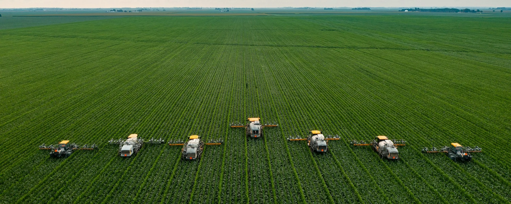

Agricoltura 4.0
Tecnologia e innovazione al servizio dell'agricoltura sostenibile
La transizione digitale in agricoltura
L'Agricoltura 4.0 rappresenta la quarta rivoluzione industriale applicata al settore agricolo: un insieme di tecnologie digitali, sensoristica avanzata e sistemi di analisi dei dati che permettono di ottimizzare la produzione, ridurre gli sprechi e minimizzare l'impatto ambientale delle attività agricole.
CAP Nord Ovest è in prima linea nell'accompagnare gli agricoltori del territorio verso questa transizione, offrendo servizi di consulenza, formazione e accesso alle più avanzate soluzioni tecnologiche del mercato.
Le nostre soluzioni tecnologiche
Agricoltura di precisione
Le immagini satellitari Sentinel e i software Cropwise-Farmshots aiutano a individuare le aree in cui i concimi sono necessari. La distribuzione mirata punta a ridurre sprechi e costi dei fertilizzanti e a valorizzare la capacità produttiva di ogni ettaro.
Analisi dei dati
Agrigenius raccoglie e rielabora dati del vigneto provenienti dai sensori in campo e da diverse fonti informative. Il flusso di informazioni si traduce in allerte e consigli operativi per avere un quadro aggiornato delle colture.
Sensoristica e difesa delle colture
Sensori e capannine meteo supportano il monitoraggio del vigneto e la scelta del momento degli interventi. Le informazioni e le allerte aiutano a impiegare gli agrofarmaci in modo tempestivo e solo quando la coltura ne ha necessità.
Irrigazione e fertirrigazione
Il Consorzio divulga l'impiego di impianti di irrigazione localizzata. Distribuire l'acqua vicino alle colture può ridurre i consumi idrici e di carburante; con la fertirrigazione si limita anche la dispersione dei concimi.
Protezione da grandine e gelate
Per vigne e frutteti il Consorzio promuove impianti antigrandine, antigelo e antibrina. Queste protezioni aiutano l'imprenditore agricolo a difendere il raccolto dalle grandinate estive e dalle gelate primaverili.
Prodotti biostimolanti
I prodotti descritti nel report contengono batteri endofitici brevettati, che vivono nei tessuti vegetali e trasformano l'azoto atmosferico in una forma più facilmente assorbibile. Possono migliorare l'efficienza d'uso dell'azoto, ridurre le fertilizzazioni azotate al suolo e sostenere resa e qualità.
Benefici per gli agricoltori
Acqua
Irrigazione localizzata e fertirrigazione per distribuire acqua e nutrienti in modo mirato.
Input agricoli
Impiego più mirato di concimi e agrofarmaci in base alle esigenze rilevate in campo.
Raccolto
Protezione di vigne e frutteti da grandine, gelo e brina.
Colture
Biostimolanti e monitoraggio digitale a supporto della resa e della qualità.
Il report descrive le soluzioni e i benefici attesi, ma non quantifica risparmi o aumenti di resa attribuibili a queste tecnologie.